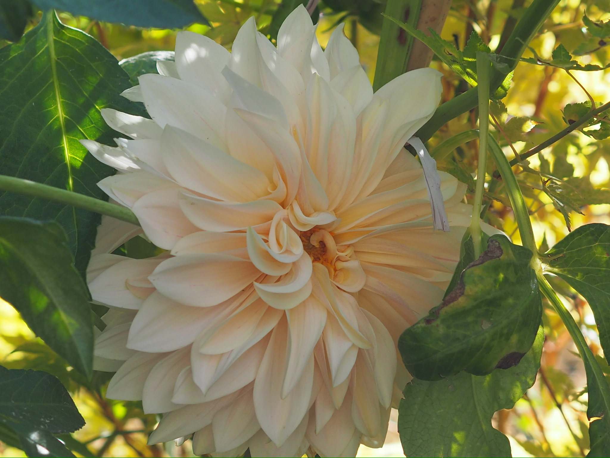

✷soy
De niña guardaba pétalos entre las páginas de los libros. Nunca dejé de hacerlo: solo aprendí a compartirlo.

gugui, en su taller
La historia
✷así empezó todo
Años trabajando en arte floral para eventos, espacios y marcas. En algún momento, al convertir la creatividad en negocio, algo se enfrió: llegaron la prisa, la exigencia y la ansiedad.
Volví a la naturaleza y a crear con las manos, sin presión ni juicio. Así nació Universo Guguiarte.

Quién es Gugui
✿así vivo, así creo
Llevo años haciendo arte floral para eventos, espacios y marcas. En algún momento quise crear desde un lugar más honesto: sin prisa, sin juicio, con lo que crece en el huerto.
Hoy vivo en Majadahonda con mis hijos, entre el huerto, la casa y el taller — todo en el mismo lugar.
recolectando en el huerto

❦el origen
La niña que guardaba tesoros del campo nunca se fue. Solo aprendió a abrir la caja y compartir lo que había dentro.
✽mi filosofía
La belleza de lo imperfecto, lo efímero y lo incompleto. Nada tiene que quedar perfecto para tener alma.
La creatividad como práctica casi espiritual: un modo de parar, mirar y volver a ti.
 el huerto
el huerto
Donde ocurre todo
❦el corazón de todo
El taller está en mi propia casa, un sótano reformado en Majadahonda, donde vivo con mis hijos. Al lado, un huerto floral ecológico cultivado con principios de permacultura.
Todo lo que creamos nace de ahí: de la tierra, de las estaciones y de las manos.
❧en primera persona
Hubo un tiempo en que la prisa, la exigencia y el ruido me alejaron de crear. Volví a la tierra y a las manos, a la filosofía wabi-sabi y a la idea de que la creatividad es una práctica casi espiritual.
«Si tú también sientes esto, aquí no tienes que demostrar nada. Solo volver a crear, a tu ritmo.»
— Gugui

Lo que cuentan
✤en sus palabras

Marta, alumna
Llegué sin saber qué esperar y salí con algo mío entre las manos.

«El único sitio donde no tengo que justificar mi ritmo.»

«El retiro me devolvió una parte de mí que creía perdida.»

✳cartas,
De vez en cuando escribo despacio: lo que florece, lo que se prensa y los próximos talleres.